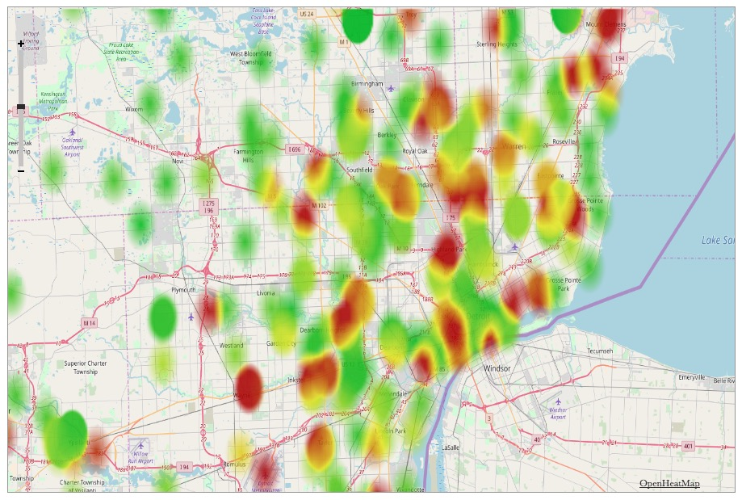

Projects
Facebook Likes by Day
SI 206 Final Project
- Used the Facebook API to visualize the days of the week that I "liked" pages
- Languages/tools used: Python, JSON, SQLite, Plotly
Michigan Graduation Rate Heatmap
SI 330 Final Project

- Processed and cleaned dataset from the Michigan Department of Education containing high school graduation rates
- Used this data to create a geographic heatmap visualizing graduation rates for all 1100 public high schools in Michigan
Create Your Own NBA Team
SI 364 Final Project
- Developed comprehensive web app using Python and Flask that implements user registration/login
- Utilized the NBA Stats API to gather team/player data
- Users pick their favorite players and create custom teams that are saved to a database